MATHS :: Lecture 21 :: Solving simulteneous equation and cramers rule

INVERSE OF A MATRIX
Definition
Let A be any square matrix. If there exists another square matrix B Such that AB = BA = I (I is a unit matrix) then B is called the inverse of the matrix A and is denoted by A-1.
The cofactor method is used to find the inverse of a matrix. Using matrices, the solutions of simultaneous equations are found.
Introduction to Vectors
Vector Transformations
Vector Dot Product and Vector Length
Unit Vectors
Matrix Vector Products
Matrices to solve a vector combination problem
Converting a line from Cartesian to vector form
Working Rule to find the inverse of the matrix
Step 1: Find the determinant of the matrix.
Step 2: If the value of the determinant is non zero proceed to find the inverse of the matrix.
Step 3: Find the cofactor of each element and form the cofactor matrix.
Step 4: The transpose of the cofactor matrix is the adjoint matrix.
Step 5: The inverse of the matrix A-1 = 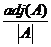
Example
Find the inverse of the matrix 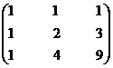
Solution
Let A =
Step 1
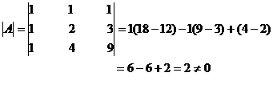
Step 2
The value of the determinant is non zero
\A-1 exists.
Step 3
Let Aij denote the cofactor of aij in
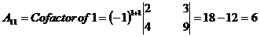
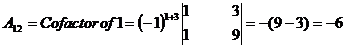
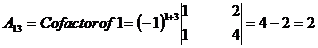
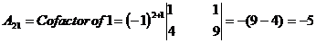
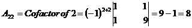
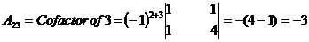
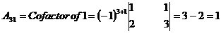
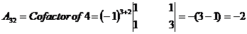
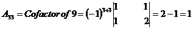
Step 4
The matrix formed by cofactors of element of determinant
\adj A = 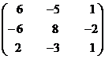
Step 5
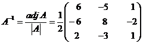
= 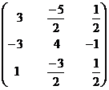
| Download this lecture as PDF here |